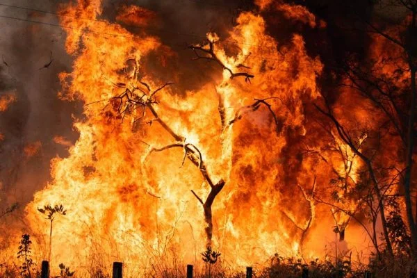
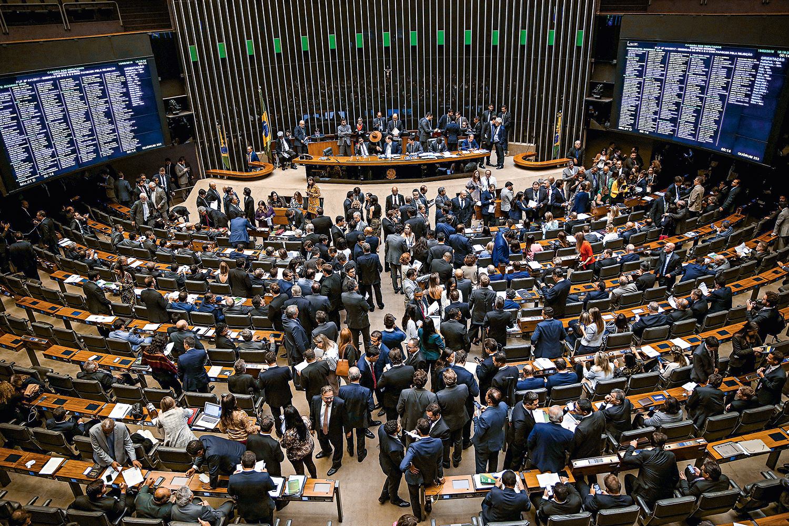
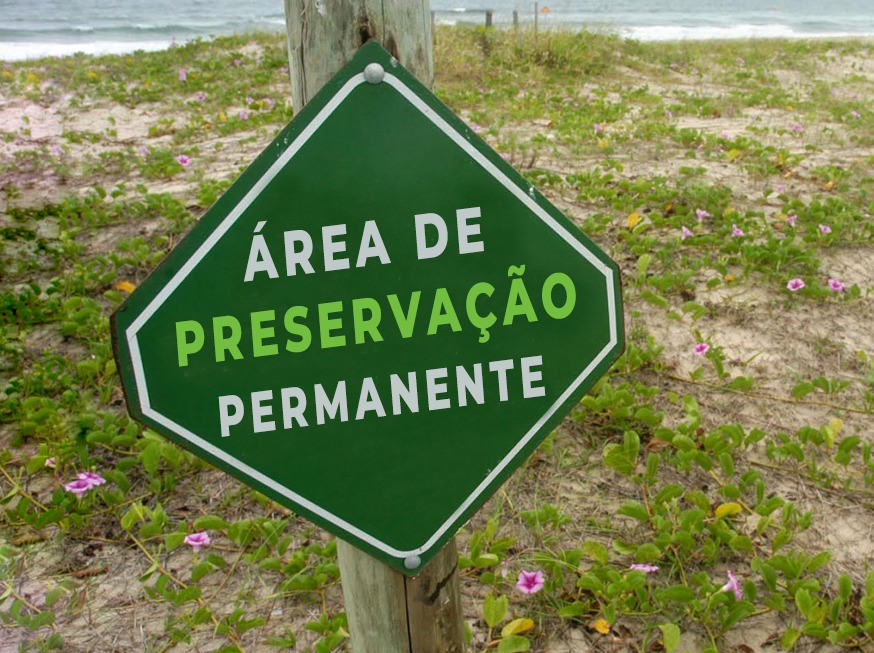

Mudanças Climáticas
Floresta histórica em chamas
Um incêndio de grandes proporções atinge uma floresta histórica rica em biodiversidade. Localizada em área de preservação, ela enfrenta a ameaça de destruição irreversível.


Política
Senado aprova projeto que garante aumento de 10% para a saúde.

Mudanças Climáticas
Preservação permanente perde 20% do seu território.
Economia
Preservação permanente perde 20% do seu território.

Política
Preservação permanente perde 20% do seu território.